CNN推理哪家强？英伟达/英特尔/骁龙/麒麟大测评
作者 Mike Liao
伊瓢 编译
量子位 出品 | 公众号 QbitAI
CNN推理在物联网的趋势下越来越重要，各大品牌也在推出不同设备以供使用。那么，主流品牌硬件做CNN推理哪家强？
一位名叫Mike Liao的作者，最近就利用暑期实习的机会测试了英伟达、英特尔、麒麟、高通、ActionSemi5个品牌硬件的CNN推理能力。
结论不出意外，英伟达永远都是最快的。不过，跑体积较小的模型的时候，高通也不错。
具体过程是这样的。
测试使用的硬件是：
1）Nvidia Jetson Tx2
2）Movidius 2450
3）Nvidia 1080ti（基准线）
4）麒麟970（华为手机）
5）高通骁龙660
6）ActionSemiS900
 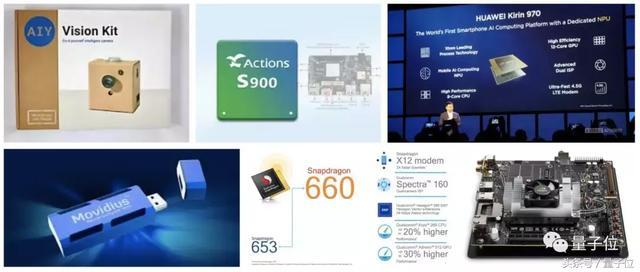
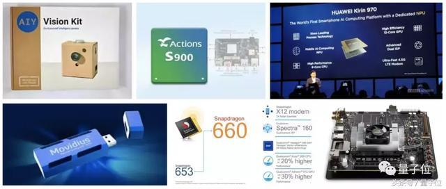InceptionV3：高通华为还不错
在InceptionV3网络的比拼中，由于每个平台功能不同，所以需要进行量化，测试中需要把高通骁龙660量化为8位，Nvidia TensorRT可以选择使用FP32或FP16，麒麟970可以选择8位或者1位量化。
 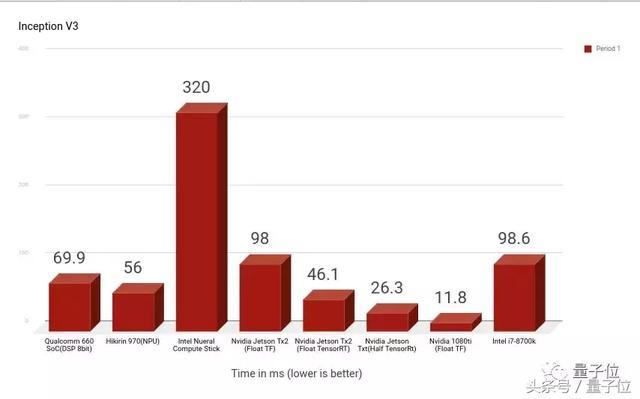
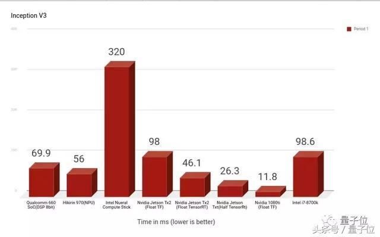InceptionV3的竞争中，最快的是Nvidia 1080ti(Float TF)，其次是Nvidia Jetson系列，1080ti比Intel i7-8700k CPU快10倍。
同为英特尔，Intel Neural Compute Stick是最慢的，比Intel i7-8700k CPU慢3倍，不过巧的是，Intel i7-8700k CPU和Nvidia Jetson Tx2 GPU的运行速度几乎一模一样。
同为手机处理器的麒麟970和高通骁龙660表现差不多，麒麟970稍微快一点点。
 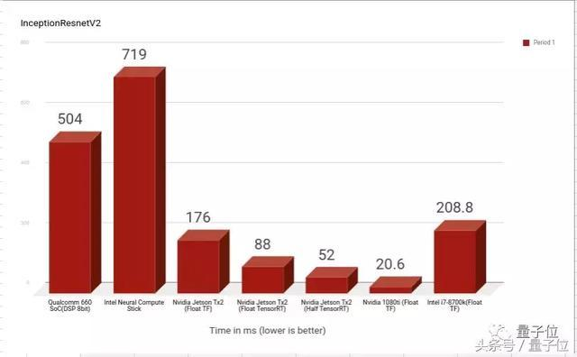
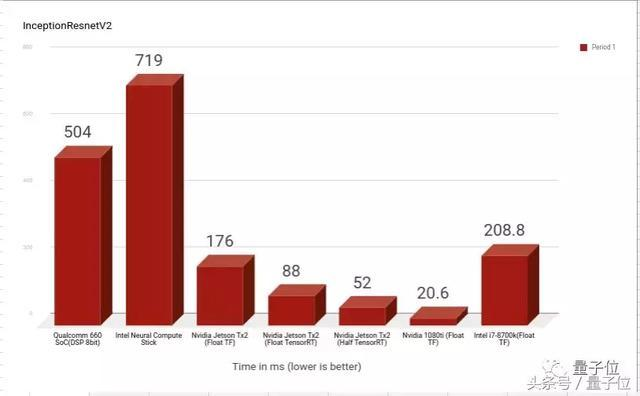在InceptionResnetV2上的结果也差不太多，除了高通骁龙660的速度被拖慢了大约8倍。
ActionSemi不宜Mobilenets
如果网络比较小，就可以使用稍微弱一些的硬件来进行推理。
调整参数可以改变输入图像的大小。我们用128和160两种型号来进行测试：
1）width_multiplier = 0.25＆input_size = 128
 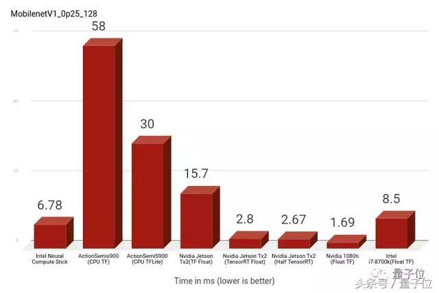
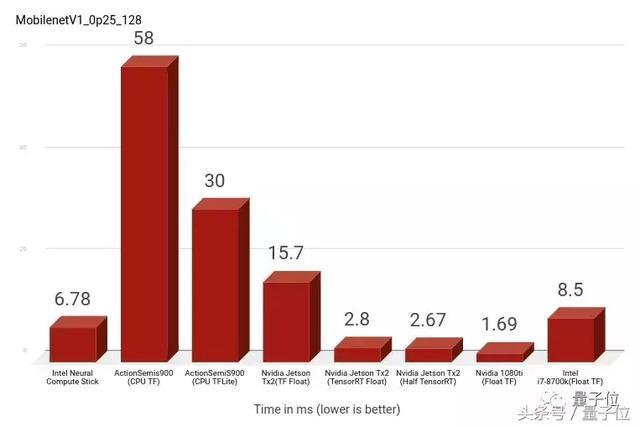最快的是Nvidia家族，ActionSemi的两款硬件速度最慢。
2）width_multiplier = 0.5＆input_size = 160
 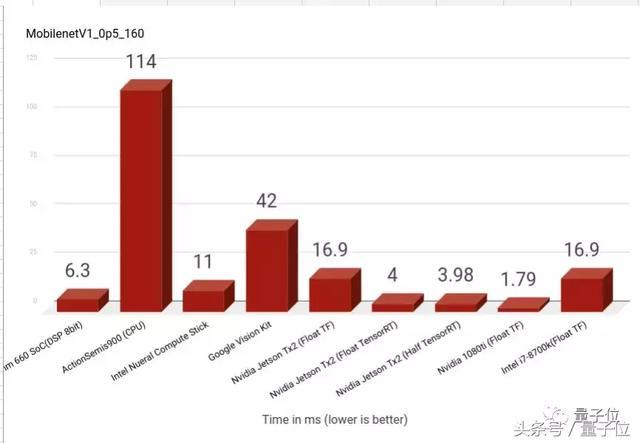
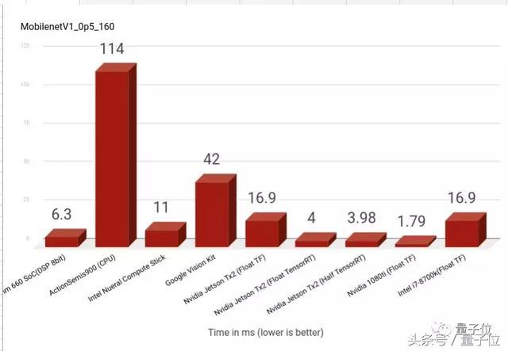表现最差的依然是ActionSemis900，耗费时间几乎是1080ti的近百倍了。
另外，Intel Nueral Compute Stick几乎比Google Vision Kit快4倍，而两者使用相同的基础Movidius 2450板，相同层的软件实现起到了很大的作用。
英伟达高通麒麟盘点
英伟达系列
 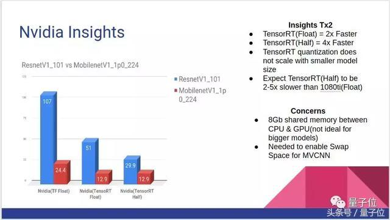
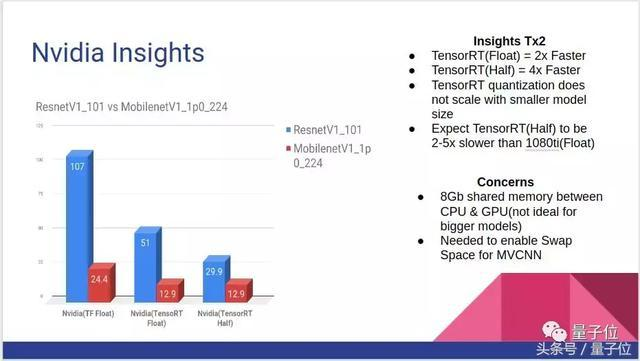在速度方面，TensorRT（Half）<TensorRT（Float）<Tensorflow（Float），每个速度比前者快〜2倍，我们可以预期速度最快的TX2 TensorRT（Half）比1080ti（Float）慢大约2-5倍。
 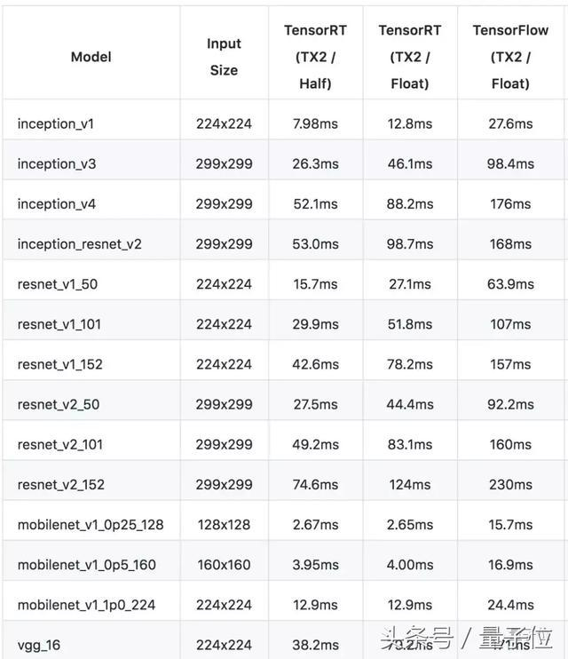
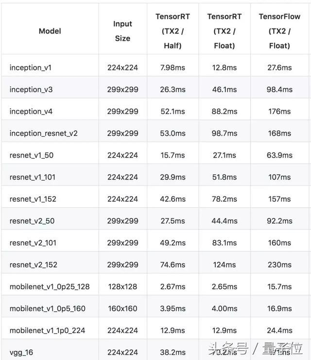高通骁龙660
 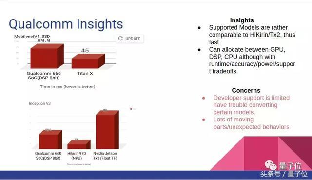
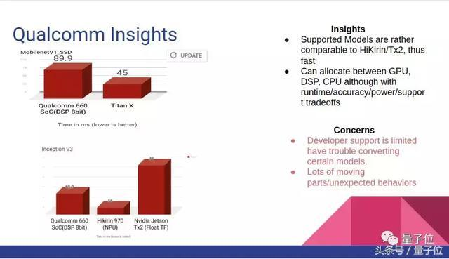高通骁龙660已经是一个相对早的版本了，训练Mobilenet，MobilenetSSD，InceptionV3这类较小网络时，骁龙660提供了不错的速度。
不过骁龙660的一个问题是SNPE平台版本问题，作者曾经用snpe-tensorflow-to-dlc编译器编译某些最先进的模型时遇到过这个问题。
麒麟970
 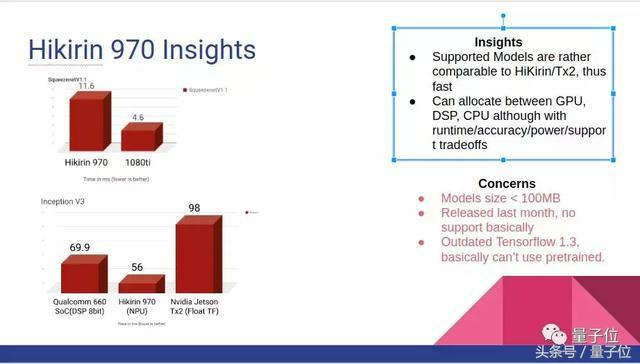
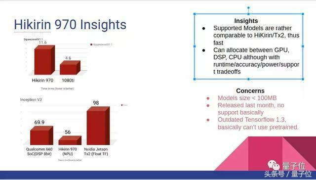麒麟970在运行InceptionV3时要比骁龙660快一点，SNPE平台在华为HiAI平台发布后比高通骁龙660更新。
不过坏处就是，麒麟970支持的模型必须小于100MB，它比较支持Caffe，对TensorFlow不太友好，只支持TensorFlow 1.3，网上的预训练模型资源也比较少。
最后，虽然这篇测评主要考虑的是速度方面，不过，真正挑选的时候还要看看预算和功耗哦。
传送门
查看作者原文和更多资料可以戳链接：
https://towardsdatascience.com/benchmarking-hardware-for-cnn-inference-in-2018-1d58268de12a
Github完整列表：
https://github.com/basicmi/Deep-Learning-Processor-List
— 完 —
欢迎大家关注我们的专栏：量子位 - 知乎专栏
诚挚招聘
量子位正在招募编辑/记者，工作地点在北京中关村。期待有才气、有热情的同学加入我们！相关细节，请在量子位公众号(QbitAI)对话界面，回复“招聘”两个字。
量子位 QbitAI· 头条号签约作者
վ'ᴗ' ի 追踪AI技术和产品新动态
3 条评论